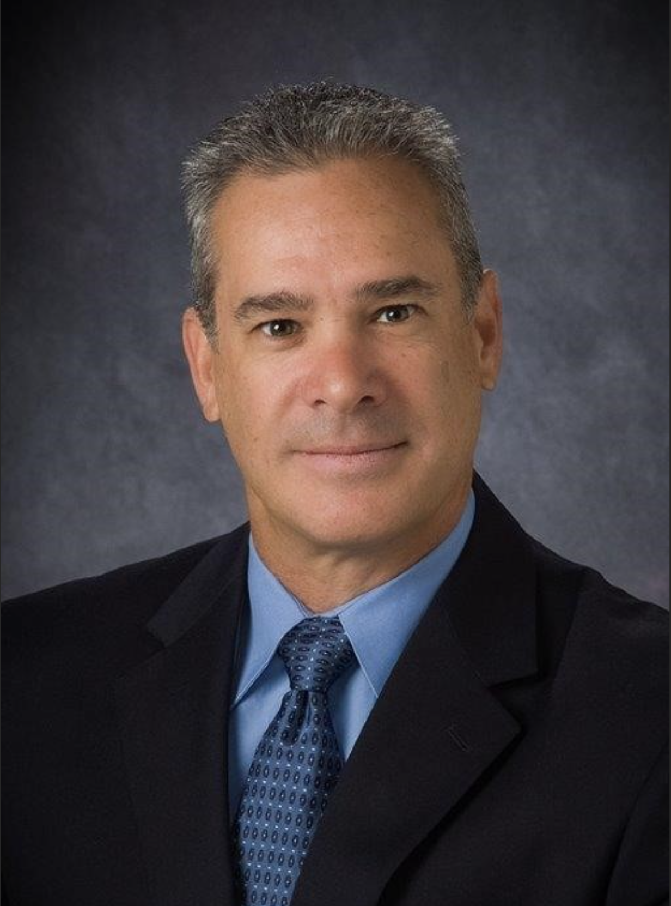

SkyWay Vertiports is designing a safe, scalable, open vertiport infrastructure network across the Phoenix Metroplex — engineered on proven heliport standards, innovated for aviation's next evolution.
To take off, an aircraft first needs a place to land. We are building those places.
SkyWay Vertiports is the forward-thinking ground layer that every eVTOL operator needs — a committed partner ensuring the safety, rapid turnaround, and customer support necessary for eVTOL transit through a definitive physical and digital backbone.
Across the Phoenix Metroplex, we're developing infrastructure that is platform-neutral by design — built to serve all eVTOL operators on equal terms, whether you are operating as an air taxi, air cargo, MEDIVAC, law enforcement, or privately owned.
One network, every operator. SkyWay builds shared infrastructure rather than a proprietary network, so the market — not a single manufacturer — decides who flies.
We speak the language of the regulators who will define this industry, because we've spent careers operating inside it.
Vertiports engineered on the same rigor and precedent that already governs rotorwing operations — not reinvented, adapted.
SkyWay Vertiports was founded to bring disciplined, flight-test ideology and engineering protocols from over a hundred years of aviation experience to the ground infrastructure side of advanced air mobility — treating vertiports with the same rigor the industry already applies to the aircraft themselves.

As an accomplished aviation executive, experimental test pilot, and program leader with more than 36 years of military and civilian flight experience across more than 35 rotary- and fixed-wing aircraft. Over the course of a distinguished career with the U.S. Army and Boeing, Greg has spent more than 22 years leading experimental and engineering flight-test efforts that advance aircraft performance, mission capability, and operational readiness.
A graduate of the prestigious United States Naval Test Pilot School, specializing in the integration, test, and evaluation of advanced rotary- and fixed-wing aircraft, aircraft systems, and mission-critical components. This expertise includes unmanned systems, manned-unmanned teaming, and complex system-of-systems integration for U.S. Government and international customers.
In addition to deep technical and operational expertise, earning an MBA from the University of Phoenix in 2019 brings strong business acumen and executive leadership capability. This combination of flight-test experience, engineering insight, and formal business education provides a bridge of technical complexity with strategic decision-making.
As an executive leader, with a proven record of defining, leading, and executing complex programs that deliver measurable business and mission success through cross-functional collaboration, and a results-driven approach, bring the credibility of a career aviator together with the strategic perspective required to lead high-performing teams and critical programs.
Whether you're an eVTOL manufacturer, a landowner, a utility, or an economic development authority — SkyWay is engaging now on siting, power, and regulatory pathways across the Phoenix Metroplex.